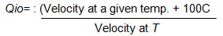

AMBE 101 :: Lecture 23 :: PRINCIPLES OF PRESERVATION

Principles of Food Preservation
A good method of food preservation is one that slows down or prevents altogether the action of the agents of spoilage. Also, during the process of food preservation, the food should not be damaged. In order to achieve this, certain basic methods were applied on different types of foods. For example in earlier days, in very cold weather condition, ice was used to preserve foods. Thus, very low temperature became an efficient method for preventing food spoilage. Let us now list the principles of food preservation.
1. Removal of micro-organisms or inactivating them: This is done by removing air, water (moisture), lowering or increasing temperature, increasing the concentration of salt or sugar or acid in foods. If you want to preserve green leafy vegetables, you have to remove the water from the leaves so that micro organisms cannot survive. You do this by drying the green leaves till all the moisture evaporates.
2. Inactivating enzymes: Enzymes found in foods can be inactivated by changing their conditions such as temperature and moisture, when you preserve peas, one of the methods of preservations is to put them for a few minutes in boiling water. This method also known as blanching inactivates enzymes and thus, helps in preserving the food.
3. Removal of insects, worms and rats: By storing foods in dry, air tight containers the insects, worms or rats are prevented from destroying it.
Control
- Heat
- Cold
- Drying
- Acids
- Sugar and salt
- Oxygen concentration
- Smoke
- Radiation
- Chemicals (preservatives)
- Heat
- Oxygen removal
- Acids
- Chemicals (antioxidants)
- Protective packaging
- Sanitation
Preservation methods
1. Thermal processing
- Inactivate enzymes
- Kill microorganisms. Most bacteria are killed in the range 82-93°c. Spores are not destroyed even by boiling water at 100°c for 30 min.
- To ensure sterility (total microbial destruction, including spores), a temperature of 121°c must be maintained for 15 min or longer.
Various methods are -
- Blanching
{kind=link}
- Pasteurization
- Sterilization
- Boiling
- Steam under pressure
2. Removal of heat (cold processing)
- Lowering temperature of food
- Decreases the rate of enzymatic, chemical and microbial reactions in food
- Storage life is extended
Various methods are -
- Refrigeration
- Freezing
3. Control of water content (drying)
- Microorganisms require free water
- Free water is removed from the food and therefore, is unavailable to microbial cells
- Multiplication will stop
- Water unavailable for chemical/biochemical reactions
- Storage life extended
Various methods are -
- Freezing
- Physical removal of water from food (dehydration)
- Removal of some of the water from food (concentration)
- Addition of substances that bind water in food, making it unavailable (sugar, salts)
4. Radiation
- Ionizing radiation
- Inactivate microorganisms in food
- Destroy storage pests
- Inactivate enzymes
Various methods are -
- Infrared radiation
- Ultraviolet radiation
5. Atmosphere composition
- Removal of oxygen
- Inhibits o2-dependant enzymatic and chemical reactions
- Inhibits growth of aerobic microorganisms
Various methods are -
- Paraffin wax
- Nitrogen backflushed bags (potato chips)
- Controlled atmosphere storage
- Vacuum packaging of fresh food (cured meats)
6. Fermentation
- Specific microorganisms are used (starter cultures)
- Facilitate desirable chemical changes
- Longer storage life
- Produce acids, alcohol that will prevent growth of undesirable microorganisms
- Produce antimicrobial substances
- Addition of chemicals
Various chemicals used are -
- Acids (inhibit microbial growth and enzymatic reactions)
- Organic acids (acetic, citric, tartaric acids)
- Inorganic acids (hydrochloric, phosphoric acids)
- Food grade, comply w/regulations
- Antioxidants (to delay oxidative rancidity)
- Antimicrobial agents:
- sodium propionate (mould inhibitor)
- sodium benzoate (antibacterial)
- sugar and salt (high concentrations)
8. Smoke
- Contains preservative chemicals (eg. formaldehyde) from the burning wood
- Heat also helps destroy microorganisms
- Heat dries the food
- Salt binds with water molecules and thus acts as a dehydrating agent in foods.
- Impair the conditions under which pathogens cannot survive.
- Curing is used with certain fruits and vegetables. ( sauerkraut, pickles),
- Meats can be submerged in a salt solution known as brine
PRESERVATION BY USING CHEMICALS
A preservative is defined as only substance which is capable of inhibiting, retarding or arresting the growth of microorganisms.
Microbial spoilage of food products is also controlled by using chemical preservatives. The inhibitory action of preservatives is due to their interfering with the mechanism of cell division, permeability of cell membrane and activity of enzymes.
Pasteurized squashes, cordials and crushes have a cooked flavour. After the container is opened, they ferment and spoil within a short period, particularly in a tropical climate. To avoid this, it is necessary to use chemical preservatives. Chemically preserved squashes and crushes can be kept for a fairly long time even after opening the seal of the bottle. It is however, essential that the use of chemicals is properly controlled, as their indiscriminate use is likely to be harmful. The preservative used should not be injurious to health and should be non-irritant. It should be easy to detect and estimate.
Two important chemical preservatives are permitted to beverages according to the FPO (1955).
1. Sulphur dioxide and
2. Benzoic acid
SULPHUR DIOXIDE
It is widely used throughout the world in the preservation of juice, pulp, nectar, squash, crush, cordial and other products. It has good preserving action against bacteria and moulds and inhibits enzymes, etc. In addition, it acts as an antioxidant and bleaching agent. These properties help in the retention of ascorbic acid, carotene and other oxidizable compounds. It also retards the development of nonenzymatic browning or discolouration of the product. It is generally used in the form of its salts such as sulphite, bisulphate and metabisulphite.
Potassium metabisulphite (K2O 2So2 (or) K2S2O5) is commonly used as a stable source of So2. Being a solid, it is easier to use than liquid (or) gaseous So2.It is fairly stable in neutral (or) alkaline media but decomposed by weak acids like carbonic, citric, tartaric acid and malic acids. When added to fruit juice (or) squash it reacts with the acid in the juice forming the potassium salt and So2, which is liberated and forms sulphurous acid with the water of the juice. The reactions involved are as follows
Potassium Potassium Sulphur
Meta bisulphate + Citric acid ® Citrate + dioxide + H2O
SO2 + H2O ® H2SO3 (Sulphurous acid)
SO2 has a better preservative action than sodium benzoate against bacteria and moulds. It also retards the development of yeasts in juice, but cannot arrest their multiplication, once their number has reached a high value.
It is well known that fruit juices with high acidity do not undergo fermentation readily. The preservative action of the fruit acid its due to is hydrogen ion concentration. The pH for the growth of moulds ranges from 1.5 to 8.5, that of yeasts from 2.5-8.0, and of bacteria from 4.0 to 7.5.As fruit beverage like citrus squashes and cordials have generally a pH of 2.5 to 3.5, the growth of moulds and yeasts in them cannot be prevented by acidity alone. Bacteria, however, cannot grow. The pH is therefore, of great importance in the preservation of food product and by regulating it, one or more kinds of microorganisms in the beverage can be eliminated.
The concentration of So2 required preventing the growth of mirgroorganism at different pH levels are as under.
pH |
S.ellipsoideus |
Mucor |
Penicillium |
Mixed bacteria |
2.5 |
200 |
200 |
300 |
100 |
3.5 |
800 |
600 |
600 |
300 |
7.0 |
Above 5000 |
Above 5000 |
Above 5000 |
Above 1000 |
The toxicity of So2 increases at high temperature. Hence its effectiveness depends on the acidity, pH, temperature and substances present in fruit juice.
According to FPO, the maximum amount of So2 allowed in fruit juice is 700 ppm, in squash, crush and cordial 350 ppm and in RTS and nectar 100 ppm. The advantages of using So2 are a) It has a better preserving action than sodium benzoate against bacterial fermentation b) it helps to retain the colour of the beverage for a longer time than sodium benzoate ( c) being a gas, it helps in preserving the surface layer of juices also (d) being highly soluble in juices and squashes, it ensures better mixing and hence their preservation and (e) any excess of So2 present can be removed either by heating the juice to about 71oC or by passing air through it or by subjecting the juice to vacuum. This causes some loss of the flavouring materials due to volatilization, which can be compensated by adding flavours.
Disadvantages (or) limitations
- It cannot be used in the case of some naturally coloured juices like those of jamun, pomegranate, strawberry, coloured grapes, plum etc. on account of its bleaching action.
- It cannot also be used for juices which are to be packed in tin containers because it not only corrodes the tin causing pinholes, but also forms H2S which has a disagreeable smell and reacts with the iron of the tin container to form a black compound, both of which are highly undesirable and
- So2 gives a slight taste and colour to freshly prepared beverages but these are not serious defects if the beverage is diluted before drinking.
II. Benzoic acid
It is only partially soluble in H2O hence its salt, sodium benzoate is used. One part of sodium benzoate is soluble in 1.8 parts of water at ordinary temperature, whereas only 0.34 parts of benzoic acid is soluble in 100 parts of water. Sodium benzoate is thus nearly 170 times as soluble as benzoic acid, pure sodium benzoate is tasteless and odourless.
The antibacterial action of benzoic acid is increased in the presence of Co2 and acid e.g. Bacillus subtilis cannot survive in benzoic acid solution in the presence of Co2. Benzoic acid is more effective against yeasts than against moulds. It does not stop lactic acid and acetic acid fermentation.
The quantity of benzoic acid required depends on the nature of the product to be preserved, particularly its acidity. In case of juices having a pH of 3.5-4.0, which is the range of a majority of fruit juices, addition of 0.06 to 0.10% of sodium benzoate has been found to be sufficient. In case of less acid juices such as grape juice atleast 0.3% is necessary. The action of benzoic acid is reduced considerably at pH 5.0. Sodium benzoate is excess of 0.1% may produce a disagreeable burning taste. According to FPO its permitted level in RTS and nectar is 100 ppm and in squash, crush and cordial 600 ppm.
In the long run benzoic acid may darken the product. It is, therefore, mostly used in coloured products of tomato, jamun, pomegranate, plum, watermelon, strawberry, coloured grapes etc.
Preservation by Using Radiation
Radiation may be defined as the emission and propagation of energy through space or through a material medium. The type of radiation of primary interest in food preservation is electromagnetic.
Initially, the destruction of microorganisms in foods by ionizing radiation was referred to by terminology brought over from heat and chemical destruction of microorganisms. Although microorganisms can indeed be destroyed by chemicals, heat, and radiation, there is, nevertheless, a lack of precision in the use of this terminology for radiation-treated foods. Consequently, in 1964 an international group of microbiologists suggested the following terminology for radiation treatment of foods.24
Radappertization
Is equivalent to radiation sterilization or "commercial sterility," as it is understood in the canning industry. Typical levels of irradiation are 3(MK) kGy.
Radicidation
Is equivalent to pasteurization— of milk, for example. Specifically, it refers to the reduction of the number of viable specific nonspore-
forming pathogens, other than viruses, so that none is detectable by any standard method. Typical levels to achieve this process are 2.5-10 kGy.
Radurization
May be considered equivalent to pasteurization. It refers to the enhancement of the keeping quality of a food by causing substantial reduction in the numbers of viable specific spoilage microbes by radiation. Common dose levels are 0.75-2.5 kGy for fresh meats, poultry, seafood, fruits, vegetables, and cereal grains.
Radappertization
Radappertization of any foods may be achieved by application of the proper dose of radiation under the proper conditions.
Preservation by Using High temperature
The use of high temperatures to preserve food is based on their destructive effects on microorganisms.
By high temperatures are meant any and all temperatures above ambient. With respect to food preservation, there are two temperature categories in common use: pasteurization and sterilization.
Pasteurization: by use of heat implies either the destruction of all disease-producing organisms (for example, pasteurization of milk) or the destruction or reduction in the number of spoilage organisms in certain foods, as in the pasteurization of vinegar. The pasteurization of milk is achieved by heating as follows:
145°F (63°C) for 30 minutes (low temperature, long time [LTLT]) 1610F (72°C) for 15 seconds (primary high temperature, short time [HTST] method) 191°F(89°C) for 1.0 second, 194°F (900C) for 0.5 second, 201°F(94°C)for0.1 second, 212°F (1000C) for 0.01 second. These treatments are equivalent and are sufficient to destroy the most heat resistant of the nonspore- forming pathogenic organisms—Mycobacterium tuberculosis and Coxiella burnetii. When six different strains of M. paratuberculosis were added to milk at levels from 40 to 100,000 colony-forming units (cfu)/mL followed by pasteurization by LTLT or HTST, no survivors survivors were detected on suitable culture media incubated for 4 months. Milk pasteurization temperatures are sufficient to destroy, in addition, all yeasts, molds, gram negative bacteria, and many gram positives. The two groups of organisms that survive milk pasteurization are placed into one of two groups: thermodurics and thermophiles. Thermoduric organisms are those that can survive exposure to relatively high temperatures but do not necessarily grow at these temperatures. The nonsporeforming organisms that survive milk pasteurization generally belong to the genera Streptococcus and Lactobacillus, and sometimes to other genera. Thermophilic organisms are those that not only survive relatively high temperatures but require high temperatures for their growth and metabolic activities. The genera Bacillus and Clostridium contain the thermophiles of greatest importance in foods. Pasteurization (to destroy spoilage biota) of beers in the brewing industry is carried out usually for 8-15 minutes at 600C.
Sterilization: means the destruction of all viable organisms as may be measured by an appropriate plating or enumerating technique. Canned foods are sometimes called "commercially sterile" to indicate that no viable organisms can be detected by the usual cultural methods employed or that the number of survivors is so low as to be of no significance under the conditions of canning and storage. Also, microorganisms may be present in canned foods that cannot grow in the product by reason of undesirable pH, oxidation-reduction potential (Eh), or temperature of storage.
Preservation by Using Low temperature
The use of low temperatures to preserve foods is based on the fact that the activities of food borne microorganisms can be slowed at temperatures above freezing and generally stopped at subfreezing temperatures. The reason is that all metabolic reactions of microorganisms are enzyme catalyzed and that the rate of enzyme catalyzed reactions is dependent on temperature.
With a rise in temperature, there is an increase in reaction rate. The temperature coefficient (Q10) may be generally defined as follows:

The Qi0 for most biological systems is 1.5-2.5, so that for each 100C rise in temperature within the suitable range, there is a twofold increase in the rate of reaction. For every 100C decrease in temperature, the reverse is true.
The term psychrophile was coined by Schmidt- Nielsen in 1902 for microorganisms that grow at O0C.30 This term is now applied to organisms that grow over the range of subzero to 200C, with an optimum range of 10-150C.44 Around 1960,
the term psychrotroph (psychros, cold, and trephein, to nourish or to develop) was suggested for organisms able to grow at 5°C or below.1147 It is now widely accepted among food microbiologists that a psychrotroph is an organism that can grow at temperatures between 00C and 7°C and produce visible colonies (or turbidity) within 7-10 days. Because some psychrotrophs can grow at temperatures at least as high as 430C, they are, in fact, mesophiles. By these definitions, psychrophiles would be expected to occur only on products from oceanic waters or from extremely cold climes. The organisms that cause the spoilage of meats, poultry, and vegetables in the 0-50C range would be expected to be
psychrotrophs.
Methods of freezing
There are various methods of freezing
1. Sharp Freezing (Slow freezing)
This technique, first used in 1861, involves freezing by circulation of air, either naturally or with the aid of fans. The temperature may vary from –15 to –29oC and freezing may take from 3 to 72 hours. The ice crystals formed one large and rupture the cells. The thawed tissue cannot regain its original water content. The first products to be sharp frozen were meat and butter. Now-a-days freezer rooms are maintained at –23 to –29oC or even lower, in contrast to the earlier temperature of –18oC.
2. Quick freezing
In this process the food attains the temperature of maximum ice crystal formation (0 to – 4oC) in 30 min or less. Such a speed results in formation of very small ice crystals and hence minimum disturbance of cell structure. Most foods are quick frozen by one of the following three methods:
a) By direct immersion
Since liquids are good heat conductors food can be frozen rapidly by direct immersion in a liquid such as brine or sugar solution at low temperature. Berries in sugar solution packed fruit juices and concentrates are frozen in this manner. The refrigeration medium must be edible and capable of remaining unfrozen at –18oC and slightly below. Direct immersion equipments such as ottenson Brine freezer, Zarotschenzeff ‘Fog’ freezer, T.V.A. freezer, Bartlett freezer etc. of commercial importance earlier are not used today.
Advantages
- There is perfect contact between the refrigerating medium and the product, hence the rate of heat transfer is very high.
- Fruits are frozen with a coating of syrup which preserves the colour and flavour during storage.
- The frozen product is not a solid block because each piece is separate.
Disadvantages
- Brine is a good refrigerating medium but it cannot be used for fruits.
- It is difficult to make a syrup that will not become viscous at low temperature.
- The refrigeration temperature must be carefully controlled, as at high temperature the medium will enter the product by osmosis and at low temperature the medium may freeze solid.
- It is very difficult to maintain the medium at a definite concentration and also to keep it free from dirt and contamination.
b) By indirect contact with refrigerant
Indirect freeing may be defined as freezing by contact of the product with a metal surface which is itself cooled by freezing brine or other refrigerating media. This is an old method of freezing in which the food or package is kept in contact with the passage through the refrigerant at –18 to -46oC flows. Knowles Automatic Package feezer, Patterson continuous plate freezer, FMC continuous can freezer and Birds eye freezers are based on this principle.
c) By air blast
In this method, refrigerated air at –18 to –34oC is blown across the material to be frozen. The advantages claimed for quick freezing over slow freezing (sharp freezing) are (1) smaller (size) ice crystals are formed, hence there is less mechanical destruction of intact cells of the food (2) period for ice formation is shorter, therefore, there is less time for diffusion of soluble material and for separation of ice (3) more rapid preservation of microbial growth and (4) more rapid slowing down of enzyme action.
3) Cryogenic freezing
Although most foods retain their quality when quick frozen by the above methods, a few require ultrafast freezing. Such materials are subjected to cryogenic freezing which is defined as freezing at very low temperature (below –60oC). The refrigerant used at present in cryogenic freeing are liquid nitrogen and liquid CO2. In the former case, freezing may be achieved by immersion in the liquid, spraying of liquid or circulation of its vapour over the product to be frozen.
4. Dehydro-freezing
This is a process where freezing is proceded by partial dehydration. In case of some fruits and vegetables about 50% of the moisture is removed by dehydration prior to freezing. This has been found to improve the quality of the food. Dehydration does not cause deterioration and dehydro frozen foods are relatively more stable.
5. Freeze drying
In this process food is first frozen at –18oC on trays in the lower chamber of a freeze drier and the frozen material dried (initially at 30oC for 24 hrs and then at 20oC). Under high vacuum (0.1 mm Hg) in the upper chamber. Direct sublimation of the ice takes place without passing through the intermediate liquid stage. The product is highly hygroscopic, excellent in taste and flavour and can be reconstituted readily. Mango pulp, orange juice concentrate, passion fruit juice and guava pulp are dehyderated by this method.
| Download this lecture as PDF here |